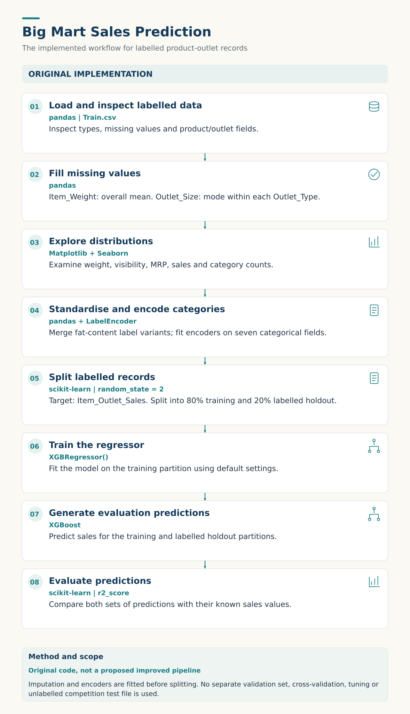

PROJECT / RETAIL ANALYTICS
Big Mart Sales Analytics
Project purpose
A retailer may sell the same product across stores with different sizes, locations, and formats. How can product and outlet information help estimate sales?
I used this project to connect data preparation, exploratory analysis, and regression modelling. My aim was to work through the full process and understand both what the model could capture and where it needed improvement.
Tools
Python · pandas · NumPy · Matplotlib · Seaborn · scikit-learn · XGBoost


Enlarge workflow ↗Understanding the data
The dataset contains 8,000+ product-outlet records and 12 original columns. Product information includes weight, fat content, visibility, category, and maximum retail price. Outlet information includes store size, location category, format, and establishment year.
The target, Item_Outlet_Sales, represents sales value for a product at an outlet. This makes the task regression, rather than classification or time-series forecasting.
Making the data consistent
The first challenge was preparing incomplete and inconsistent records.
- Item weight: Filled 1,463 missing values with the column mean.
- Outlet size: Filled 2,410 missing values using the most common size within each outlet type.
- Category labels: Standardised variations such as “LF,” “low fat,” and “Low Fat” so they were treated as the same category.
- Encoding: Used LabelEncoder to convert seven categorical fields into numerical inputs.
Filling outlet size was a useful example of bringing context into data cleaning: the outlet’s format provided more information than a single replacement value for every store.
Exploring the records
I examined distributions of item weight, visibility, MRP, and sales, alongside counts of product categories, outlet sizes, and establishment years.
Sales were right-skewed, with many lower-value records and fewer high-value observations. This highlighted why an average alone could hide important differences across records.
These charts helped me understand the data before modelling. Establishing the strongest sales drivers would require further analysis.
Building the model
I trained an XGBoost Regressor with an 80/20 train-test split, using random_state=2. Both partitions came from the labelled dataset, so their predictions could be compared with known sales values.
This version used the model’s default settings. It established an initial result before systematic tuning, additional feature engineering, or comparisons with alternative models.
Results and what they mean
| Metric | Reported result |
|---|---|
| Training R² | 0.636 |
| Holdout test R² | 0.587 |
The model accounted for approximately 58.7% of the variation in holdout sales, leaving a substantial portion unexplained. This is an R² result, not an accuracy percentage.
The training score was also moderate. The gap between training and holdout performance was around 0.05, so the result calls for investigating the inputs and modelling choices as well as generalisation.
Several choices make this an initial result rather than a finished predictive solution:
- Simple imputation retained the records but did not capture differences between individual products.
- Label encoding assigned numerical codes to categories without comparing alternative representations.
- Default model settings were used without systematic hyperparameter tuning.
- One random split provided only one view of performance.
- R² alone did not show the typical prediction error in sales units.
These are areas to investigate, rather than proven explanations for the score. The original workflow also calculates imputation values and fits encoders before splitting, which limits the independence of the holdout evaluation.
What I would improve
- Reliable validation: Fit preprocessing on training data only and use cross-validation.
- Better data preparation: Test product-level missing-value treatment and alternative categorical encodings.
- Stronger modelling: Explore outlet age and product groupings, compare models, and tune XGBoost using GridSearchCV or RandomizedSearchCV.
- Clearer error analysis: Add MAE and RMSE, then examine errors across products, outlet types, and sales ranges.
- Business relevance: Assess whether prediction errors are acceptable for the intended planning decisions.
Business value and learning
With stronger validation, sales estimates could become one input into product and outlet planning. Inventory decisions would also need stock levels, margins, promotions, and replenishment constraints.
What I took from this project was the importance of questioning the result after training. Building a model is one step; understanding its errors and deciding whether its predictions are useful is where the next stage begins.